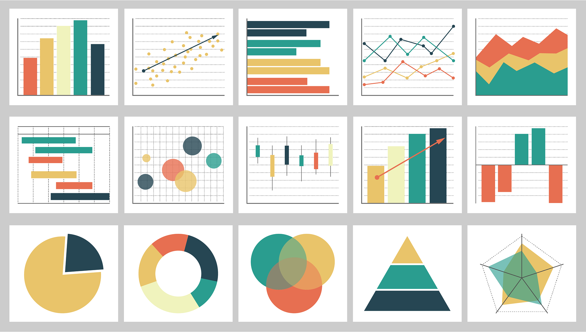

About
.png)
Hi, I'm Opeyemi
I believe in the transformative power of data to fuel growth and innovation. Throughout my projects, such as developing HR dashboards to analyze employee retention and conducting EDA for the Titanic dataset, I’ve honed the ability to present complex insights through intuitive visualizations, reports, and models. My mission is to help stakeholders translate data into actionable insights, ensuring informed decision-making. By communicating findings through dashboards, models, and reports, I empower organizations to utilize data effectively to achieve strategic goals and drive meaningful progress.
In my project experiences, such as analyzing Adidas sales trends and developing a predictive model for diabetes outcomes, I’ve mastered the art of uncovering valuable insights from data. By leveraging advanced techniques like logistic regression and pattern recognition, I ensure data integrity and accuracy. My expertise lies in transforming raw data into clear, actionable insights that optimize business strategies. Whether streamlining operations or guiding market expansion, I empower organizations to make data-driven decisions that enhance performance and drive success.
Projects

HEALTH ANALYSIS
The Health Analysis Report utilizes exploratory data analysis (EDA) on a diabetes dataset to uncover variable distributions and correlations. It develops a logistic regression model to predict diabetes outcomes based on significant variables, providing actionable insights for healthcare decision-making. This analysis highlights the effectiveness of data-driven approaches in enhancing health interventions and outcomes.
REPORT API MODEL Blog Post.png)
ADIDAS 2020/21 REPORT
The Adidas 2020/21 Sales Report analyzes the company’s performance during the COVID-19 pandemic, highlighting resilience across sales channels despite significant challenges. It examines shifts in consumer demand and Adidas' strategic responses, emphasizing the brand's adaptability in a volatile retail environment. The report identifies growth opportunities and key product successes, showcasing how data-driven insights can guide strategic decision-making.
REPORT DASHBOARD Blog Post.png)
SALES' ANALYSIS
Sales Analysis - Internship Project As part of my internship project, the sales analysis dashboard uncovers significant growth fueled by a revamped marketing strategy. Insights from customer feedback and purchasing trends reveal key opportunities for product enhancements and market expansion. This project demonstrates the value of leveraging data for strategic business decisions.
REPORT DASHBOARD Blog Post.png)
SHOPPER'S TREND
Key Point: Analyzed customer behavior to identify trends and insights that inform marketing strategies and improve customer experiences. Shopper's Trend Analysis This project conducted an in-depth analysis of customer purchasing behaviors, revealing key insights into shopping trends and preferences. These findings are crucial for refining marketing strategies and enhancing customer experiences. By recognizing patterns in buying behavior, businesses can tailor their product offerings and engagement methods, ultimately driving growth and increasing customer satisfaction.
REPORT DASHBOARD Blog PostTHE TITANIC
The Titanic - Descriptive Analysis This analysis explores survival patterns and factors influencing the outcomes of Titanic passengers through data-driven insights. By examining variables such as age, gender, class, and fare, the project identifies trends that determined survival rates. It provides a comprehensive understanding of the demographics most affected, offering valuable insights into human behavior during crises. Ultimately, this analysis enhances our knowledge of decision-making and risk factors in critical situations.
REPORT DASHBOARD Blog Post.png)
H.R. DASHBOARD
HR Dashboard - Internship Project As part of my internship, I developed a comprehensive HR analysis dashboard that revealed job satisfaction as a critical factor influencing employee retention. By analyzing key HR metrics, such as employee engagement and performance, this project provided actionable insights for improving retention strategies. This project emphasizes the importance of data-driven approaches in human resources management.
REPORT DASHBOARD Blog PostSkills

Python
I possess a strong command of Python, complemented by proficiency in essential libraries such as Pandas, NumPy, and scikit-learn, which enables me to perform data manipulation and analysis efficiently and accurately while tackling complex datasets and deriving actionable insights.
Link to course
Tableau
I possess advanced skills in Tableau, where I excel at transforming complex datasets into intuitive dashboards. This capability consistently empowers stakeholders to extract valuable insights and make data-driven decisions effectively.
Link to course
SQL
I am skilled in utilizing SQL for querying and managing large datasets, optimizing database performance and ensuring data integrity throughout the data lifecycle. My expertise empowers me to extract relevant information efficiently, facilitate complex queries, and perform thorough data analysis.
Link to course
Education and Experience
I possess a solid educational background in data science, complemented by hands-on experiences in analyzing diverse datasets. These experiences have sharpened my skills in data manipulation, visualization, and predictive modeling, enabling me to extract actionable insights that support strategic decision-making and drive organizational success.
Link to courseExcel
I am proficient in Excel, utilizing advanced functions, pivot tables, and macros to streamline data analysis, enhance reporting, and improve overall efficiency. My capabilities enable me to transform complex datasets into actionable insights, ensuring that stakeholders can make informed decisions quickly and effectively.
Link to courseMachine Learning
I have hands-on experience with algorithms such as regression, classification, and clustering, enabling me to address real-world problems effectively. This knowledge allows me to implement these algorithms to extract valuable insights from data and support data-driven decision-making.
Link to course